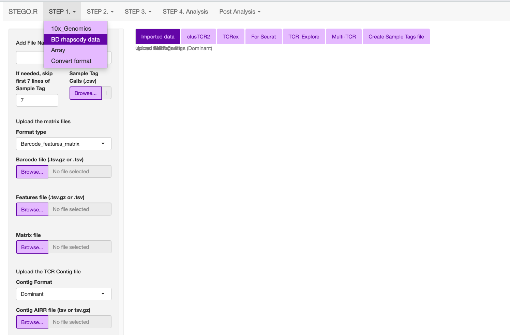
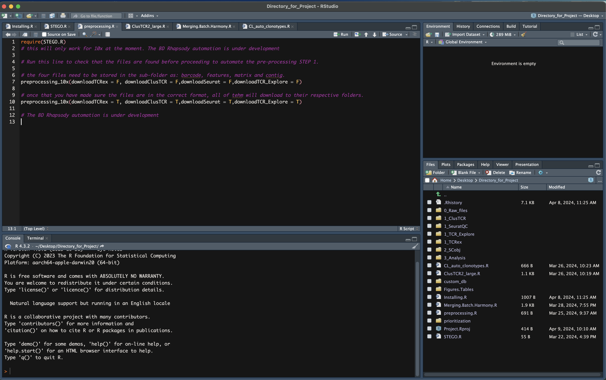

Step 1. Formatting
Note
- Consideration for the analysis.
The pipeline was built for scRNA-seq with scTCR-seq datasets.
QC documentation is being actively updated.
- Prerequisite
Install STEGO. Copy all your raw files to the 0_Raw_files folder within your project.
Running STEGO.R
Now the the R environment is set up and the STEGO.R and its dependencies are installed, we can now run the application.
Run the following lines in R. A window will opened that runs the STEGO.R shiny R application.
require(STEGO.R)
runSTEGO()
You are now ready to process your scRNA-seq with scTCR-seq data!
Manual processing
Formatting the 10x Genomics, BD Rhapsody or Array to create the necessary documents for Seurat QC process, ClusTCR2, TCRex and TCR_Explore.
While this process was initially developed for TCRs, we have also included the capacity for pairing the BCR sequences.
Table 1. File to upload in the respective section.
Source |
Inputs |
|---|---|
10x Genomics |
|
BD Rhapsody |
|
10x Genomics
There are several file formats that are compatible with the STEGO.R QC process. These includes the standard cell ranger output of barcode, features, matrix files as well as the separate contig file.
Under development: multi-TCR (requires unfiltered contig file)

BD Rhapsody
There are two format outputs of BD Rhapsody aligment of either a cellxgene (.csv.gz) or the barcode, features and matrix file. Unlike 10x Genomics, there is also an extra file called “Sample Tags”, which contains the multi-plex ID names. The “Sample Tags” file is required. However, if this file is not created (one sample in the experiment), it can be created under the “Create Sample Tags file”.
Additionally there are several formats for the TCR contig file: paired dominant, AIRR dominant (unpaired), AIRR unfilted. For the latter two file formates we include to filter to keep only the ‘paired’ and if BCR was present as well.
{kind=link}
Array
Note
The **TCR_Explore** tool is designed for the interrogation of the TCR repertoire independent of gene expression data. For more information, visit TCR_Explore.File outputs and storage for Step 1.
Upload the documents to the required sections depending on the technology and files available. Repeat for each of the samples within your project.
Upload the files according to Table 1.
Check that the files have uploaded in the “Uploaded data” tab.
- Add File Name, this will be added to the “orig.ident” and “Sample_Name”
(10x Genomics and Array, as this is added from the “Sample Tags” in BD Rhapsody) column and used through out the process. This name needs to be unqiue to the file.
If, at a latter point it needs to be updated, this can be done with the “Updated_label.csv”, located in 3_Analysis folder
Download to each of the 1_ folders e.g.,
Download the TCRex output (containing functional Beta chains) to “1_TCRex” folder
Download both the “meta-data” and “Matrix” in the SeuratQC into the “1_SeuratQC” folder
Two files need to be downloaded per sample under the “ClusTCR” to the “1_ClusTCR” folder. They will have the prefix of AG_ and BD_ (Version 1.5)
Download the TCR_Explore file “1_TCR_Explore” folder
or
Download all files in order of TCRex, Seurat (matrix and meta.data), ClusTCR2 and TCR_Explore to the download folder.
Move all files to the respective folders in the Project directory according 1_
Automated Step 1.
Currently available for 10x genomics
Within the raw data folder should be subfolders for each unique sample in the dataset. These subfolders should contain at least the barcodes, features, matrix and filtered_contig files.
- 0_rawfiles
- treatment1_SampleID1
barcode
features
Matrix
TCR files (needs to have the word contig to be found)
Sample1_treatment2
Sample2_treatment1
{kind=link}
Use the preprocessing.R found in the R folder of the project_director
{kind=link}